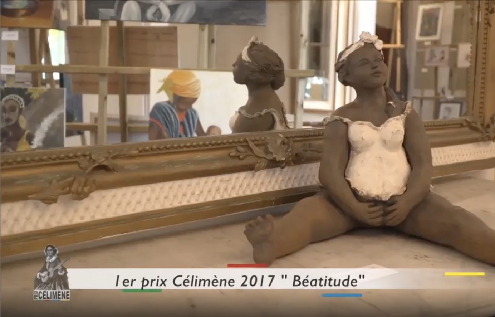

Le prix Célimène récompense chaque année depuis 2005 une femme et une de ses œuvres d'art plastique, peinture, sculpture, photographie. Avec ce concours, le département de la Réunion encourage l’expression des femmes artistes amateurs dont le travail est peu connu.
« Femme multiple » sculpture de Catherine Ragonnet
« Africa » peinture d'Élora Bénard
« Énigme féminine » de Gusnny Lasut-Maison
« Et un jour une femme » peinture de Jennifer Baraka Vidot
« Le poids du collier » par les élèves du collège Leconte De Lisle
« 1928-1992 » de Marie LEBIAN
« Sans titre 2022 » de Carole MORIN
« Enfant de la nature » de Chantal FEROUL- COLIN
« Naître femme, n’être qu’une femme » de Elise HAHN
« le Piton d’Héva » par les élèves du collège Pointe des Châteaux
Confinement oblige, les lauréates ont reçu leur prix lors d'une cérémonie qui n'était pas ouverte au public.
« Fugitive » de Julie Olivier
« Contre-sens » d'Alex Nikita Païnaye
« Grand Bain » de Frédérique Frick
« Par les hauts, par les bas » de Raphaëlle Aho
« Vénus Collection » par le collège Leconte de Liste de Saint-Louis
« Je t’aime Neal » peinture de Bei Ling
« Maintenant, je suis » photographie de Lee Jenkins
« L’Enfant intérieur » peinture de Lucella Grondin
« La Célimène » du collège Jean le Toullec du Port
« Métissage » de Guylène LAURET
« Mythe de l’Aristophane » de Marie-Julie Gascon
« Evasion » de Dominique Maud ROBERT
« Couler la Réunion » classe de 3ème 303 du collège Terrain Fayard
« Une seconde chance pour mes mains » de Larissa BALTHAZAR
« L’attente » d'Anne FOURNIER
« L’exutoire » de Florence LE GUYON
« Friche industrielle Le Port » de Daniel MARIMOUTOU WIPF
« La femme-mosaïque » par les élèves du collège Celimène Gaudieux de La Saline
« Béatitude » sculpture de Béatrice TANZILLI-BASSEREAU 
« Eden » de ROSALY Rosanne
« Ephémère » d'Arielle ASTUTO
« La vie » de Marie Nadine SOUMARIA-POULIA
« Repos » d'Anne BEGUIN
« Mère et enfant » de Marine KERBIDI
« Femme pliée » de Gladys LOUIS
« Ti cuisine mémé » d'Adélaïde GRONDIN
« Sculpture au fil : Mayaj » de Julie JOLY
« Les baigneuses » d'Anna HYZY HURPIN
« Progressions » d'Emilie HARDY
« Autoportrait » d'Ella POLLUX

« Femme fatale » de Miguy HOAREAU
« Les Eve et...Adam » de Claire MANGATA
« Estime de soi » d'Emmanuelle KOENIG
« La matronne » de Judith BONHOMME
« Bardzour » de Géraldine GABIN
« Malienne en boubou » de Claire GRADEL
« Le cri » de Suzanne TESSIER
« Héritage » photographie d'Anne-Lise SIEGLER
« Ma Célimène » d'Audrey HUGON
« Porphy » d'Appolinaire PAYET
« Zénération » de Séverine IMIZA
« Femme du Monde - Mahoraise » peinture d'Odile SAUVE
« Femme à l’enfant, angoisse d’un avenir incertain » d'Anne-Lise DELHOM
« Patrimoine Mondial de l’Humanité » de Sarah LEMBO
« Tailleur de pilon réunion » de Marie-Hélène VIRAPINMODELY
« Absences » photographie d'Inga WEGNER
« Naissance attendue » d'Isabelle FAIVRE
1er Prix : « J’ai 6 ans » poème de Joëlle CALLIMOUTO
2ème Prix : « À ma mère » d'Escaline LAW-TANG
« Femme : mutilation » sculpture de Florence LAFLEUR
{% Image page, "celimene/femme-mutilation-papillon-de-loin.jpg", "reproduction de Femme mutilation en bronze dans le jardin de roses spécialement dédié aux femmes du Jardin de l’état à Saint-Denis" %}
La sculpture primée en 2009 « Femme : mutilation » a été reproduite en statue de bronze qui est exposée aujourd'hui, entouré de papillons dans le Jardin de l’état à Saint-Denis.
« Je n’ai rien dit du tout » photographie d'Emilie SCHMITT
1er Prix : « Aux dernières nouvelles » d'Agnès FARRUGIA
2ème Prix : « Vies en voyages » de Marie PIFARELY
« Rêves d’enfant » photographie de Sylvie CHAN-LIAT
« La Dentellière » de Stéphanie DUBOSQ
« Enlacées » de Johanna TINLOT
« Femmes d’ici et d’ailleurs » peinture d'Alexandra PALAVASSON
« Tram trap mémwar » sculpture d'Alice Aucuit
« Fluidités » de Kristien MEEUS
« Errance » de Violaine PORON
« Hommage à Angel Mac Auliffe » peinture de Chryslène TURPIN
« Kadounkor » sculpturede Yannick CONNAN
« Tango sur les bords de la Seine » photographie de Valérie PAUS
« Intérieur » peinture de Caroline BARBIER
Elizabeth HOAREAU avec les photographies « L’homme aux paniers » « Le chat du bar » et « La baie de Halong »
Danièle BRADESI avec « Les fausses jumelles »
Aline FONTAINE avec « La victoire de Rose »